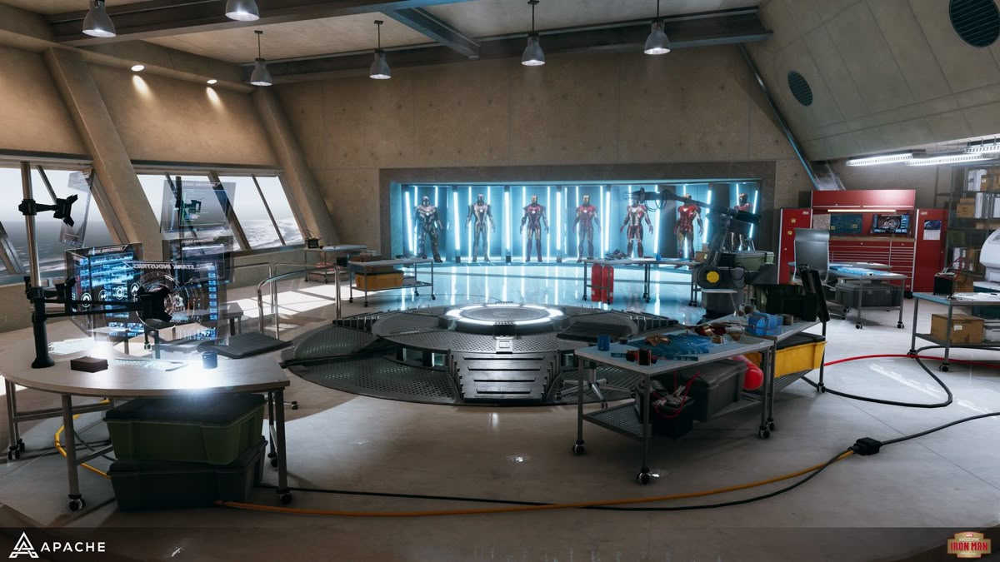
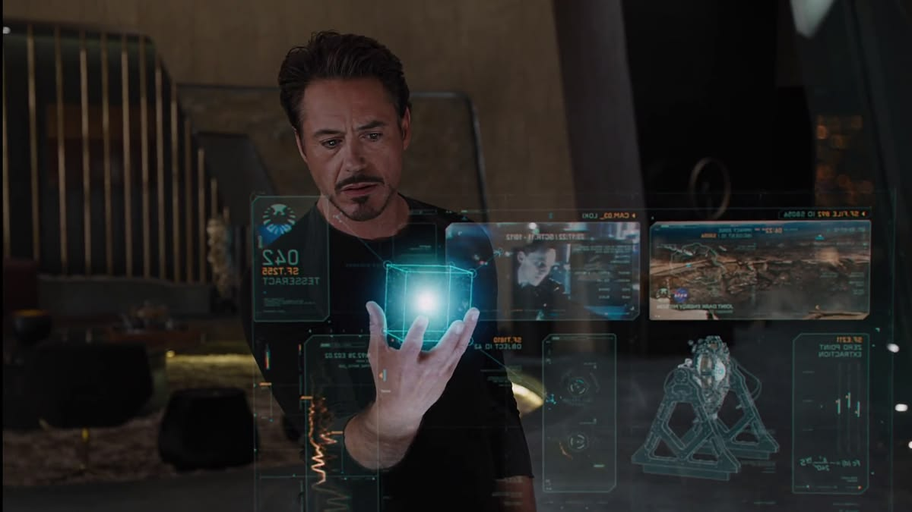
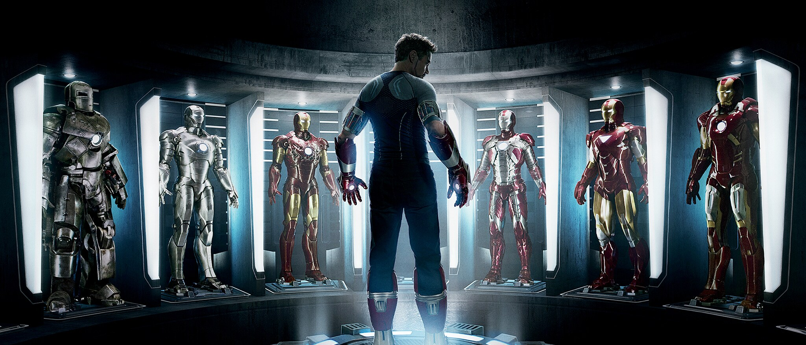
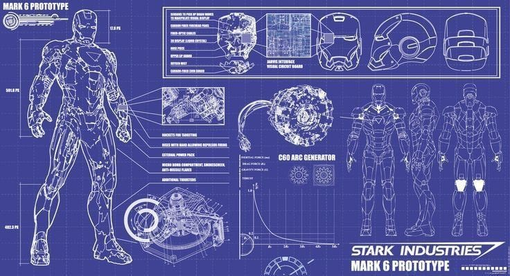
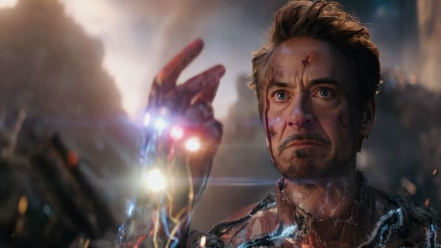

Laboratório
REGISTROS HOLOGRÁFICOS E ARQUIVOS DE MÍDIA DA STARK INDUSTRIES
Registro de áudio oficial capturado dos protocolos de revelação pública.






Guerra Infinita (Titã)
Tony Stark utiliza todo o arsenal da armadura Mark L em nanotecnologia.
Os Vingadores (Nova York)
Estreia da Mark VII acionada por braceletes em pleno ar.
Guerra Civil (Aeroporto)
Combate direto entre as equipes divididas pelos Tratados.